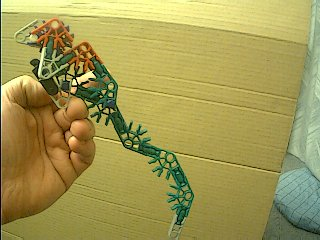

Robbert
Mattijs
Robbert Mientki
januari 2001
| Lego-Knex
Robbert Mattijs |
knex
Robbert Mientki januari 2001 |

|
|
|
het begon allemaal met het na bouwen van een draak dit was mij niet gelukt er kwam wel een draak uit maar anders als op het plaatje.toen vouwde ik de draak en kreeg een papagaai maar er was een probleem wat ik als maar niet kon oplossen maar toen ik er archter kwam dat als je de poten van de draak de kop en handen andersom draaide dat je dan geen papagaai kreeg |
|
|
||
|  | ||
|
|
Sky Tower uit Slagharen (Nederland) |